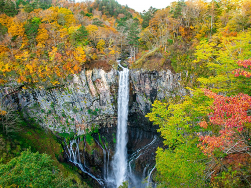
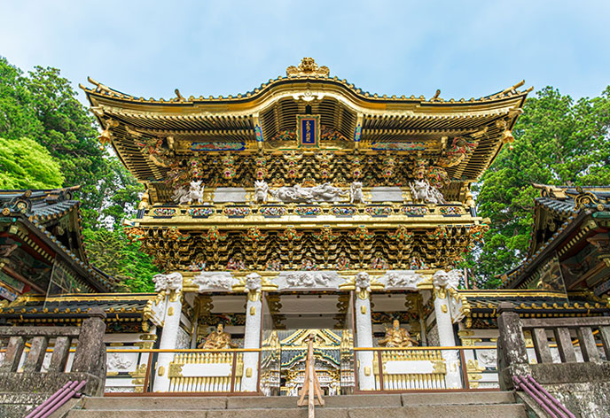

華厳ノ滝
華厳ノ滝は栃木県日光市に位置し、日本三名瀑の一つに数えられる美しい滝です。落差97メートルの迫力ある滝は、特に春の雪解けや秋の紅葉の時期に多くの観光客を魅了します。滝は中禅寺湖から流れ出しており、その水量と勢いが見どころです。滝の周辺には観瀑台が設置されており、間近でその壮大な景色を楽しむことができます。華厳ノ滝は自然の美しさと力強さを感じることができる絶景スポットです。

日光東照宮

日光東照宮は、栃木県日光市に位置する徳川家康を祀る神社で、日本の最も豪華で芸術的な神社の一つとされています。1617年に建立され、豪華絢爛な彫刻や装飾が施されています。特に「眠り猫」や「三猿」の彫刻が有名です。東照宮は世界遺産に登録されており、その壮麗な建築と歴史的な意義から多くの観光客が訪れます。静かな森林の中に位置し、心を落ち着かせる場所としても知られています。